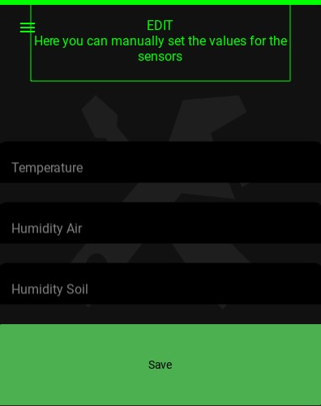
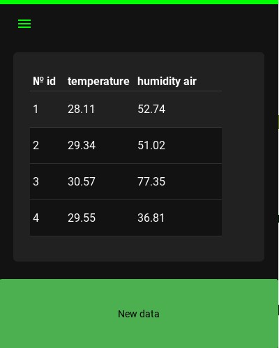
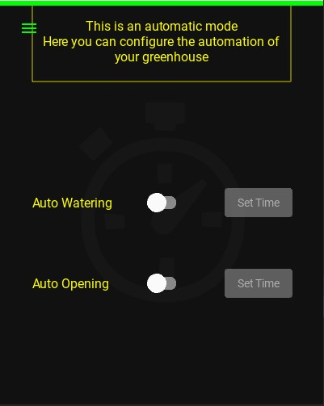

Наше приложение называется «Идеальная теплица». Основная его цель: удаленное управление теплицей. Приложение выполнено в основном в черном, белом тоне с добавлением зеленого и желтого цветов. Интерфейс крайне прост и понятен. Но если все-таки у вас возникли вопросы по его использованию, то вся информация ниже вам поможет.
ОПИСАНИЕ ПРИЛОЖЕНИЯ
Меню
Вступление
Меню
Как только вы откроете приложение, то попадете на главный экран. Но сейчас речь пойдет не о нем, а о «Меню», зайти в которое можно нажав на иконку в левом верхнем углу. Это основа, через которую мы работаем с приложением. Именно поэтому читая про него, вы узнаете про все части приложения. В меню находятся: Главная, Редактировать, Таблицы, Экстра режим, Авто режим, Темы, GitHub. Остановимся подробнее на каждом из них.

Главная
«Главная» - главный экран, на котором находится 4 основные кнопки, которые показывают температуру и влажность воздуха для каждого датчика в данный момент времени. Кнопка «Информация о почве» переносит нас на похожую страничку, но на ней уже 6 основных кнопок, которые показывают влажность почвы, и также, нажав «Назад», вы сможете вернуться на главный экран. Кнопка «Другие действия» снизу перенесет нас на страницу, где мы сможем открыть форточки, включить и выключить полив, но только если все остальные показатели датчиков не превышают нормы или не занижены. Показатели, при которых кнопки в разделе «Другие действия» не будут активны, вы сможете установить в следующем разделе меню – «Редактировать».


Редактировать
Как и было сказано раннее, этот раздел предназначен для установки показаний датчиков, при которых в разделе «Главная»/ «Другие действия» кнопки не будут активны, и вы не сможете открыть полив или окна. В «Редактировать» в строках «Температура», «Влажность воздуха», «Влажность почвы» вы вводите значения и сохраняете, нажав на «Сохранить» снизу.

Таблицы
Здесь вам доступны таблицы, где собрана вся информация с главного экрана в более компактном виде.

Экстра режим
Данная страничка позволит вам, несмотря на показания датчиков, открыть полив или окна, чего в «Другие действия» вы сделать бы не смогли. Кликаете по ходунку, и кнопки становятся активными. Использовать данный раздел стоит только в экстренных ситуациях!

Авто режим
Нажав на кнопку «Авто режим», вы перейдете в замечательную часть нашего приложения, где сможете поставить определенное время, когда полив или форточка откроются автоматически. Так вам будет удобнее, и вы точно ничего не забудете. Кликаете по ходунку, после чего кнопка «Установить время» станет активной, и вы сможете установить время с клавиатуры или по циферблату.

Темы
Также доступна такая функция, как смена темы приложения с темной на светлую и обратно. Для этого просто нужно нажать на “Темы”.

GitHub
Мы оставили кнопку-ссылку на наш репозиторий на Git Hub, если вдруг кому-то будет интересно узнать, как создавалось наше приложение.
Помощь
В верхнем правом углу секции «Меню» находится значок «Вопрос». Это перенаправит вас на наш веб-сайт, на случай если возникли какие-либо вопросы.
Приятного пользования!